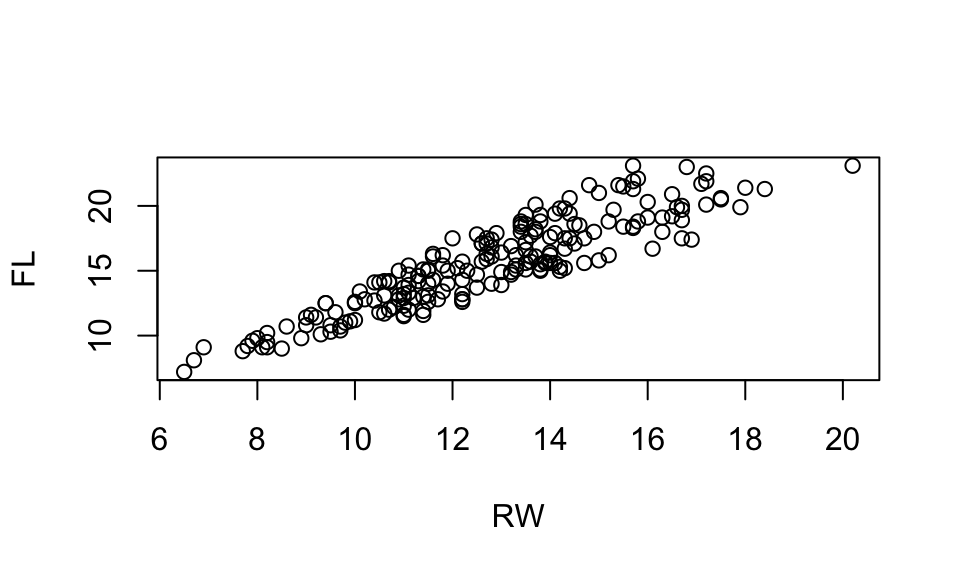
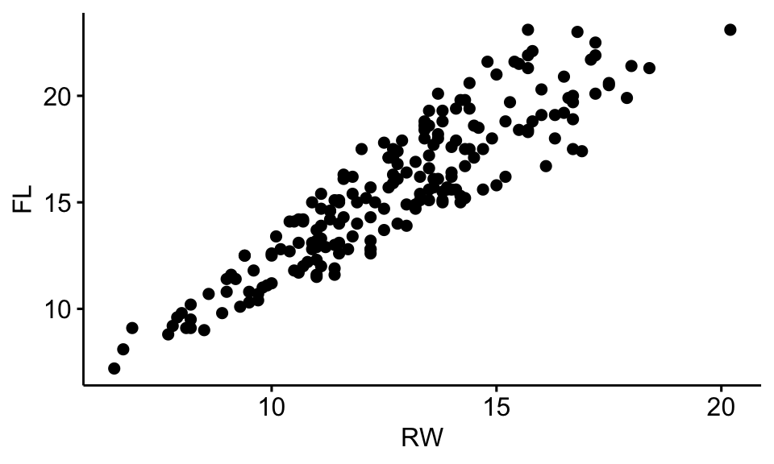
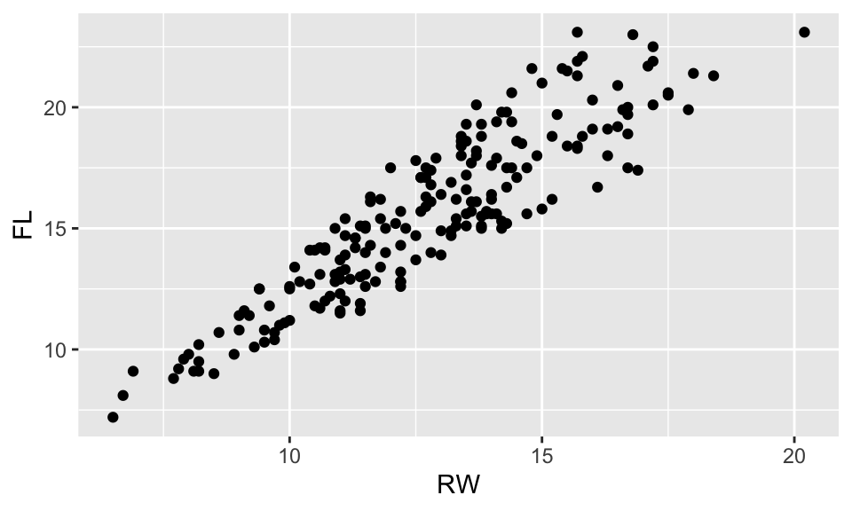

Loading packages from CRAN
Introduction
When you install R you get base R, which is the core set of functions, functionality, and some data sets. Base R however is surrounded by a universe of extensions built by statistician, programmers, academics and businesses that use R for analyses. A lot of R’s functionality is found in these packages, including data sets, special plotting functions, and statistical tools for the analysis of complex data. Some of these are fairly standard and are downloaded along with base R and just need to be explicitly installed. Other have to be downloaded from the internet and installed. Most packages contain data in order to demonstrate what they do; working with data from packages will be covered in a later lesson.
This book relies heavily on an R package I’ve written called “wildlifeR” (https://brouwern.github.io/wildlifeR/) that contains the datasets used throughout the book, as well as some helpful R functions I’ve written.
Most R packages you’ll use are stored on the CRAN website where you download R (https://cran.r-project.org/). R and RStudio have functions and tools for downloading and managing packages that we’ll briefly introduce in this exercise.
Another place a package can be stored online is a code repository like GitHub. The wildlifeR package lives on GitHub and can be downloaded directly from there. Many packages on CRAN also occur on GitHub, especially if programmers are actively developing, updating, and managing the package. We’ll cover downloading packages from GitHub in the next exercise.
Learning objectives
This exercise will introduce students to
- the concept of an R Package (aka library)
- how to load R packages using the library() function
- the R plotting package ggplot2
- cool add-ons to ggplot2, ggpubr and cowplot
Learning goals
By the end of this exercise students should be able to
- locate and download packages from the CRAN website using RStudio
- recognize the R functions used to download and install packages.
Functions & Arguements
- install.packages
- dependencies = TRUE
- library
Packages
- MASS
- ggplot2
- ggpubr
- cowplot
Potential hangups
- quoted vs. unquoted text (eg qplot vs. ggpubr syntax)
Loading packages that come with base R
What you download from CRAN is base R (also known as the base distribution). Many functions are called base functions because they are hard-wired into R.
OPTIONAL: What functions come with base R?
The following section is opitonal
If for some reason you want to see all the functions that come with base R, type this into the console and press enter. (ls stands for “list” and is a function we’ll use more later).
ls("package:base")As R has been developed there has also built up a cannon of tried and true packages that are downloaded automatically when you download R, but they aren’t brought into R’s working memory unless you tell R.
Optional: What packages come with base R?
If you want to see all of the packages that come with base R, do this. library() is a function you will use a lot.
.libPaths("")
library()One package that is part of this cannon is MASS, which stands for Modern Applied Statistics in S. “S” is the precursor to R, and MASS is the package that accompanies the book of the same name, which is one of the original books on S/R. (https://www.springer.com/us/book/9780387954578)
End optional section
[ ] Loading packages with the library() function
When a function is already downloaded to your computer, you explicitly load it into R’s working memory using the library() command.
library(MASS)Preview: loading data from packages
Many packages have data. We can load data using the data() command.
data(crabs)We plot data with the plot() command.
plot(FL ~ RW, data = crabs)
Load data from an external R package
Many packages have to be explicitly downloaded and installed in order to use their functions and datasets. Note that this is a two-step process: 1. Download package from internet 1. Explicitly tell R to load it
[ ] Step 1: Downloading packages with install.packages()
There are a number of ways to download packages. One of the easiest is to use the function install.packages(). Note that it might be better to call this “download.packages” since after you install it, you also have to load it!
Frequently in this book I will include install.packages(…) at the beginning of a lesson the first time we use a package to make sure the package is downloaded. Note, however, that if you already have downloaded the package, running install.packages(…) will download a new copy.
We’ll download a package used for plotting called ggplot2, which stands for “Grammar of Graphics.”
install.packages("ggplot2")Often when you download a package you’ll see a fair bit of red text, and sometime other things will pop up. Usually there’s nothing of interest here, but sometimes you need to read things carefully over it for hints about why something didn’t work.
Optional: Seeing all of your installed packages
The following section is optional
If for some reason you want to see everything you’ve downloaded, do this.
installed.packages()End optional section
[ ] Step 2: Explicitly loading a package with library()
The install.packages() functions just saves the package software to R; now you need to tell R “I want to work with the package”. This is done using the library() function. (Its called library because another name for packages is libraries)
library(ggplot2)OPTIONAL: Making a plot with ggplot
This section is optional
Now we can make a plot with the ggplot2 package we just downloaded, like using the qplot() function. (Note that the syntax is different than what we did above with plot() ).*
qplot(y=FL, x= RW, data = crabs)
End opitional section
[ ] Downloading packages using RStudio
RStudio has a point-and-click interface to download packages. In the pane that says “Files, Plots, Packages, Help, Viewer” click on “Packages”. When the panel shift below “Packages” it will say “Install, Update, Packrat.” Click on “Install.” (There might be a lag during this process as RStudio get info about your packages). In the pop up widow there will be a middle field “Packages” where you can type the name of your package. There’s an auto-complete feature to help you in case you forget the name. Then click “install.” Note that in the bottom right corner of the pop up is a checked box next to “Install dependencies.” Leave that checked; more on that later.
[ ] Packages & their dependencies
R packages frequently use other R packages (which frequently use other R packages…). When an R package requires another package, its called a dependency. Depending on who and how the package was written up, dependencies might not be an issue or could be a problem.
As noted above when you download packages using RStudio’s point and click interface there’s a box that should be checked called “Install dependencies.”
If you are using install.packages() there is an extra argument “dependencies = TRUE” that elicits the same behavior. I’ll use this to get an add-on for ggplot2 called ggpubr.
install.packages("ggpubr",dependencies = TRUE)We can then install this
library(ggpubr)Optional: Make a plot with ggpubr
This section is optional
ggpubr is an add on to ggplot. (This means that ggpubr has ggplot as a dependency). Note that the syntax for ggpubr function we use, ggscatter(), has a different syntax (again) than ggplot’s qplot() function and base R’s plot() function.
ggscatter(data = crabs,y = "FL", x = "RW") # use quotes!
End optional section
Challenge
An another add-on to ggplot2 is cowplot, which stands for “Claus O. Wilke Plot”. Download cowplot from CRAN using either the point-and-click method or install.packages, and then load it using library. Then run the following R code, which should make the plot below.
Note that “FL” and “RW” are NOT in quotation marks as they are for ggscatter()!
qplot(data = crabs, y = FL, x = RW) #no quotes!